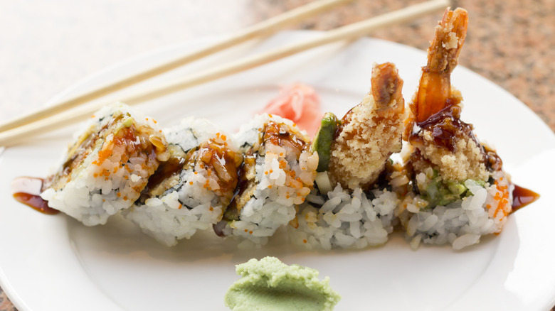
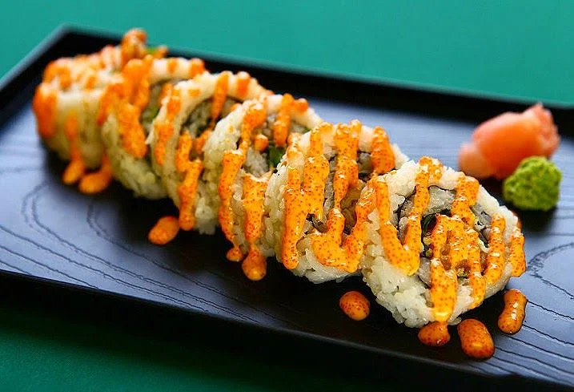
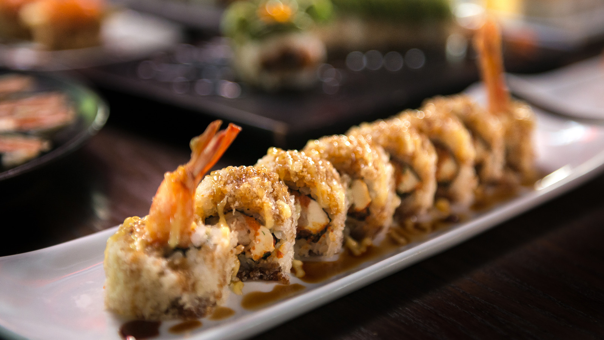

| Roll name |
Ingredients |
Image |
| Tiger Roll |
Avocado, shrimp tempura, cucumber, fish eggs. |
 |
| Philadelphia Roll |
Smoked salmon, avocado, cream cheese. |
 |
| Dynamite Roll |
Shrimp tempura, yellowtail bean sprouts, carrots, avocados, cucumber, chilli, spicy mayo. |
 |
| Rainbow Roll |
Imitation crab, avocado, cucumber, salmon, shrimp, yellowtail, tuna. |
|
| Dragon Roll |
Eel, crab, cucumber, eel sauce, avocado outside. |
 |
| California Roll |
Imitation crab or crab, cucumber, avocado, sesame seeds. |
|
| Shrimp Tempura Roll |
Shrimp tempura, tempura flakes, avocado, eel sauce. |
 |